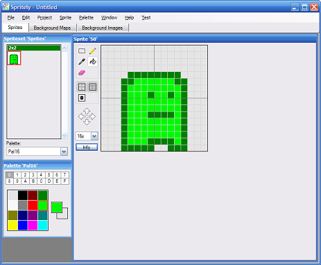

Sprite editor for GBA and NDS projects.
Spritely is an editor that allows you to easily create sprites for Gameboy Advance (GBA) and Nintendo DS (NDS) programming projects. It is designed specifically for programmers who are just starting out in GBA/NDS game development.
Spritely is best described as a simple paint program that allows you to create a set of foreground/background sprites and screen maps. It also includes an "Export..." option that creates a complete GBA/NDS project - source code, makefile and all.
In conjunction with devkitPro and an emulator like VisualBoyAdvance, you can easily create your own GBA/NDS games and get started in the wonderful world of homebrew.
A set of basic tutorials is also available.
For suggestions/bug-reports, go to the Issues tab and edit an existing entry or add a new one. Send other comments to ɯoɔ˙ןıɐɯƃ@ɔɐʞʎɹɐƃ - please include "spritely" in the subject line.
